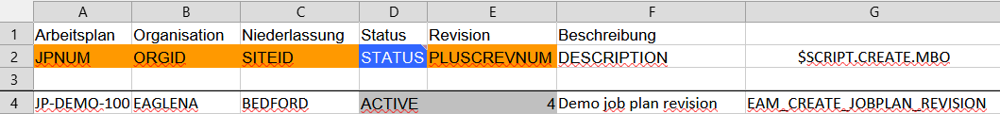

Creating revision-controlled objects during import
Revision-controlled Maximo objects must be created through their business logic. A new Job Plan revision, for example, is not an independent JOBPLAN record: Maximo must generate it through revise() so that the revision number, status transitions, copied child records, and revision history remain consistent.
A normal maximex insert uses MboSet.add(). That is correct for ordinary new records and for an initial revision, but it is not sufficient when the intended operation is “create the next revision”. Creating such a row with add() can produce a record that looks valid while bypassing Maximo’s revision logic and corrupting the revision chain.
Use the optional Excel control column $SCRIPT.CREATE.MBO to replace only the Mbo creation step with an Automation Script.
Behavior of $SCRIPT.CREATE.MBO
| Excel value | Import behavior |
|---|---|
| Column missing or cell empty | maximex creates the main object with the normal targetobjset.add() path. |
| Script name present | maximex executes the named Automation Script. The script must create the new Mbo and assign it to result. There is no fallback to add() if the script fails. |
After the script returns, maximex continues with the normal import: it applies the remaining Excel values, processes child or specification data when applicable, and saves the supplied target MboSet.
The Automation Script must meet these requirements:
- Create an active Jython library script without a launch point.
- Leave the Automation Script Variables table empty; maximex supplies the runtime bindings directly.
- Create the new Mbo in the supplied
targetobjset. - Assign the new, unsaved Mbo to the single supported output variable
result. - Do not use
mbo,createdMbo,launchPoint, orscriptNameas custom output bindings. - Do not call
save()in the script. The import worker owns the save operation.
Minimal example: importing a Job Plan revision
The following example imports revision 4 of Job Plan JP-DEMO-100. An earlier active revision must already exist in Maximo, and revision 4 must not yet exist.
The template was generated for the Job Plans application. The technical column $SCRIPT.CREATE.MBO was then added manually to the second header row, and the Automation Script name was entered in the import row.

The relevant technical columns and values are:
JPNUM |
ORGID |
SITEID |
STATUS |
PLUSCREVNUM |
DESCRIPTION |
$SCRIPT.CREATE.MBO |
|---|---|---|---|---|---|---|
JP-DEMO-100 |
EAGLENA |
BEDFORD |
ACTIVE |
4 |
Demo job plan revision |
EAM_CREATE_JOBPLAN_REVISION |
The second worksheet row contains the technical attribute names used by maximex. The label in the first row is only descriptive; the control header in row 2 must be exactly $SCRIPT.CREATE.MBO.
PLUSCREVNUM contains the requested target revision. The script does not set this key directly. Maximo generates it through revise(), and maximex keeps and checks the generated key instead of overwriting it with the Excel value.
STATUS=ACTIVE is applied after the other editable values because the script enables deferred status processing. This lets Maximo first create and populate the pending revision and only then activate it.
Minimal Automation Script
Create an active Jython Automation Script named EAM_CREATE_JOBPLAN_REVISION, without a launch point and without configured script variables.
The following script is intentionally a minimal working example. It omits validation and error handling so that the creation contract remains easy to see.
# EAM_CREATE_JOBPLAN_REVISION
# Library script: no launch point and no configured variables.
#
# A production script should also validate the Excel values, ensure that the
# target revision does not already exist, select exactly one revisable source,
# call canRevise(), and provide useful createMboStage/createMboDiagnostic data.
# For EXTENDED imports whose revision API copies child records, also set
# copiedChildrenExpected = True.
# revise() generates the Job Plan keys. Do not overwrite them from Excel.
preserveGeneratedKeys = True
# Apply the requested STATUS only after the remaining import values.
deferStatus = True
# Find the active source revision in the same MboSet that maximex will save.
targetobjset.resetQbe()
targetobjset.setQbeExactMatch(True)
targetobjset.setQbe("JPNUM", excelValues.get("JPNUM"))
targetobjset.setQbe("ORGID", excelValues.get("ORGID"))
targetobjset.setQbe("SITEID", excelValues.get("SITEID"))
targetobjset.setQbe("STATUS", "ACTIVE")
targetobjset.reset()
source = targetobjset.moveFirst()
# Remove the source query before revise() adds the new revision to this set.
targetobjset.resetQbe()
revision_description = excelValues.get("$REVISIONDESCRIPTION") or ""
result = source.revise(revision_description)
The important line is:
result = source.revise(revision_description)
result is the only supported output variable. It must contain the new, unsaved Mbo returned by the Maximo business method.
Execution flow
For the sample row, maximex performs these steps:
- It searches for
JP-DEMO-100, siteBEDFORD, organizationEAGLENA, revision4. - Because revision
4does not exist, the row enters the creation path. $SCRIPT.CREATE.MBOinvokesEAM_CREATE_JOBPLAN_REVISIONinstead of callingadd().- The script loads the active source Job Plan and calls
revise(). - The new revision is returned in
result. - maximex applies
DESCRIPTIONand any other Excel values. - Because
deferStatus=True, maximex appliesSTATUS=ACTIVElast. - maximex saves the target MboSet.
This preserves Maximo’s normal revision behavior and avoids creating an independent record that merely has a revision number assigned to it.
Optional revision description
The minimal spreadsheet does not require a revision description. To pass one to the example script, add another technical column:
$REVISIONDESCRIPTION
The script already reads this value and passes an empty string to revise() when the column is absent or empty.
When $SCRIPT.CREATE.MBO.FORCE is needed
For Job Plans, force mode is normally unnecessary because the requested target revision in PLUSCREVNUM is part of the lookup and does not exist yet.
Other revision or factory models may use keys that identify the existing source object instead of the future target. In that case, add $SCRIPT.CREATE.MBO.FORCE and set it to true so the worker skips the normal target lookup and executes the creation script deliberately.
Do not combine force mode with a populated target unique ID, $UPDATEONLY=true, or $DELETE=true.
Initial revisions and ordinary objects
The hook is optional:
- For an ordinary new Mbo, leave
$SCRIPT.CREATE.MBOempty and use the normal insert path. - For Job Plan revision
0, leave$SCRIPT.CREATE.MBOempty when the initial record can be created normally. - Use a creation script only when Maximo requires a business method such as
revise(),duplicate(), or another object-specific factory operation.